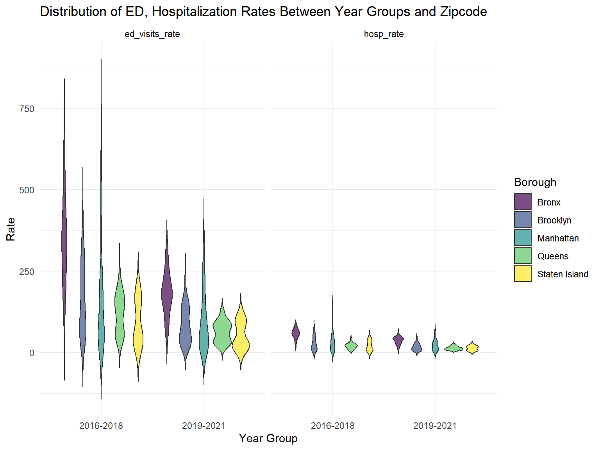
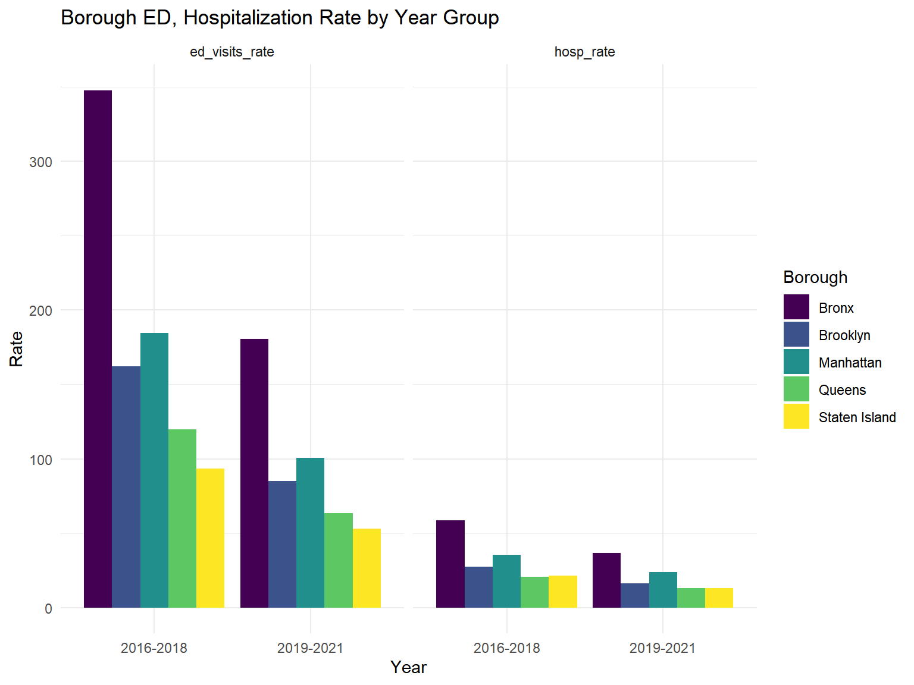
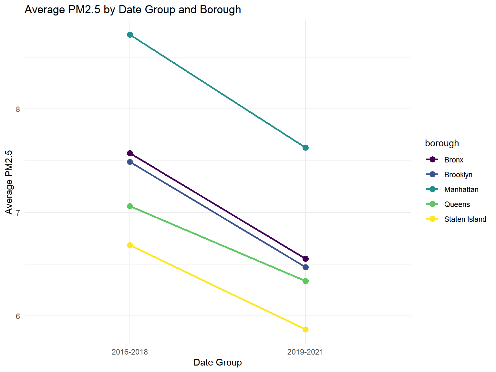

Data Preparation
Data Preparation
Pediatric ED Admissions and Hospitalizations data
# Load and clean data for 2016-2018
ed_2016_2018 <- read_csv("data/ed_data_csv.csv", skip = 2) %>%
janitor::clean_names() %>%
filter(
data_years == "2016-2018",
indicator %in% c(
"Asthma emergency department visit rate per 10,000 - aged 0-17 years",
"Asthma hospitalization rate per 10,000 - aged 0-17 years"
),
county %in% c("New York", "Queens", "Richmond", "Kings", "Bronx")
) %>%
select(data_years, county, zip_code, indicator, zip_code_rate) %>%
mutate(
indicator = case_when(
indicator == "Asthma emergency department visit rate per 10,000 - aged 0-17 years" ~ "ed_visits_rate",
indicator == "Asthma hospitalization rate per 10,000 - aged 0-17 years" ~ "hosp_rate"
),
zip_code_rate = case_when(
str_detect(zip_code_rate, "\\*") ~ NA_character_,
zip_code_rate == "s" ~ NA_character_,
TRUE ~ zip_code_rate
)
) %>%
rename(borough = county) %>%
mutate(
borough = case_when(
borough == "New York" ~ "Manhattan",
borough == "Kings" ~ "Brooklyn",
borough == "Richmond" ~ "Staten Island",
TRUE ~ borough
)
)## Rows: 44145 Columns: 16
## ── Column specification ────────────────────────────────────────────────────────
## Delimiter: ","
## chr (13): Component, Indicator, Data Years, Region, County, Numerator (3-yea...
## dbl (3): ZIP Code, Region Rate, State Rate
##
## ℹ Use `spec()` to retrieve the full column specification for this data.
## ℹ Specify the column types or set `show_col_types = FALSE` to quiet this message.# Load and clean data for 2019-2021
ed_2019_2021 <- read_csv("data/ed_data_csv.csv", skip = 2) %>%
janitor::clean_names() %>%
filter(
data_years == "2019-2021",
indicator %in% c(
"Asthma emergency department visit rate per 10,000 - aged 0-17 years",
"Asthma hospitalization rate per 10,000 - aged 0-17 years"
),
county %in% c("New York", "Queens", "Richmond", "Kings", "Bronx")
) %>%
select(data_years, county, zip_code, indicator, zip_code_rate) %>%
mutate(
indicator = case_when(
indicator == "Asthma emergency department visit rate per 10,000 - aged 0-17 years" ~ "ed_visits_rate",
indicator == "Asthma hospitalization rate per 10,000 - aged 0-17 years" ~ "hosp_rate"
),
zip_code_rate = case_when(
str_detect(zip_code_rate, "\\*") ~ NA_character_,
zip_code_rate == "s" ~ NA_character_,
TRUE ~ zip_code_rate
)
) %>%
rename(borough = county) %>%
mutate(
borough = case_when(
borough == "New York" ~ "Manhattan",
borough == "Kings" ~ "Brooklyn",
borough == "Richmond" ~ "Staten Island",
TRUE ~ borough
)
)## Rows: 44145 Columns: 16
## ── Column specification ────────────────────────────────────────────────────────
## Delimiter: ","
## chr (13): Component, Indicator, Data Years, Region, County, Numerator (3-yea...
## dbl (3): ZIP Code, Region Rate, State Rate
##
## ℹ Use `spec()` to retrieve the full column specification for this data.
## ℹ Specify the column types or set `show_col_types = FALSE` to quiet this message.The data cleaning process involved multiple steps to prepare asthma-related health data across two time periods (2016-2018 and 2019-2021) for analysis. Data was obtained from the New York State Asthma Dashboard, which compiles information from multiple sources including the Behavioral Risk Factor Surveillance System (BRFSS) and Statewide Planning and Research Cooperative System (SPARCS) databases. For each time period, data was loaded from a CSV file, skipping the first two rows, and variable names were standardized using the janitor package’s clean_names() function to ensure consistent formatting.
The data was then filtered to include two specific health indicators: asthma emergency department visit rates and asthma hospitalization rates for ages 0-17 years. The geographic scope was limited to five counties (New York, Queens, Richmond, Kings, and Bronx), and only relevant variables were retained. These variables included data_years (the specified three-year period of data collection), county (geographic location), zip_code (postal code), indicator (type of healthcare utilization), and zip_code_rate (rate per 10,000 children aged 0-17 years).
Variables were renamed: “Asthma emergency department visit rate per 10,000 - aged 0-17 years” to “ed_visits_rate” and “Asthma hospitalization rate per 10,000 - aged 0-17 years” to “hosp_rate”. County was renamed to borough to reflect NYC terminology. This involved changing “New York” to “Manhattan”, “Kings” to “Brooklyn”, and “Richmond” to “Staten Island”.
Missing and unstable values in zip_code_rate were handled in two ways: values marked with “s” were converted to NA (indicating data suppressed for confidentiality reasons due to not meeting reporting criteria), and values marked with an asterisk were converted to NA (indicating fewer than 10 events in the numerator, making the rate unstable).
The resulting datasets provide clean, consistently formatted data for analyzing pediatric asthma-related healthcare utilization across New York City boroughs at the ZIP code level for 2016-2018 and 2019-2021.
Temperature data by Borough
https://open-meteo.com/en/docs/historical-weather-api
used this website and recorded the coordinates of 5 boroughs and extracted the temperatrue information by daily in a timeframe between 2016 and 2021.
#add all the data set by borough
manhattan = read_csv("data/manhattan.csv",skip = 2) |>
mutate(Borough = "Manhattan") |>
janitor::clean_names()## Rows: 2192 Columns: 4
## ── Column specification ────────────────────────────────────────────────────────
## Delimiter: ","
## dbl (3): temperature_2m_max (°C), temperature_2m_min (°C), temperature_2m_m...
## date (1): time
##
## ℹ Use `spec()` to retrieve the full column specification for this data.
## ℹ Specify the column types or set `show_col_types = FALSE` to quiet this message.bronx = read_csv("data/bronx.csv",skip = 2) |>
mutate(Borough = "Bronx") |>
janitor::clean_names()## Rows: 2192 Columns: 4
## ── Column specification ────────────────────────────────────────────────────────
## Delimiter: ","
## dbl (3): temperature_2m_max (°C), temperature_2m_min (°C), temperature_2m_m...
## date (1): time
##
## ℹ Use `spec()` to retrieve the full column specification for this data.
## ℹ Specify the column types or set `show_col_types = FALSE` to quiet this message.brooklyn = read_csv("data/brooklyn.csv",skip = 2) |>
mutate(Borough = "Brooklyn") |>
janitor::clean_names()## Rows: 2192 Columns: 4
## ── Column specification ────────────────────────────────────────────────────────
## Delimiter: ","
## dbl (3): temperature_2m_max (°C), temperature_2m_min (°C), temperature_2m_m...
## date (1): time
##
## ℹ Use `spec()` to retrieve the full column specification for this data.
## ℹ Specify the column types or set `show_col_types = FALSE` to quiet this message.queens = read_csv("data/queens.csv",skip = 2) |>
mutate(Borough = "Queens") |>
janitor::clean_names()## Rows: 2192 Columns: 4
## ── Column specification ────────────────────────────────────────────────────────
## Delimiter: ","
## dbl (3): temperature_2m_max (°C), temperature_2m_min (°C), temperature_2m_m...
## date (1): time
##
## ℹ Use `spec()` to retrieve the full column specification for this data.
## ℹ Specify the column types or set `show_col_types = FALSE` to quiet this message.staten_island = read_csv("data/staten_island.csv",skip = 2) |>
mutate(Borough = "Staten Island") |>
janitor::clean_names()## Rows: 2192 Columns: 4
## ── Column specification ────────────────────────────────────────────────────────
## Delimiter: ","
## dbl (3): temperature_2m_max (°C), temperature_2m_min (°C), temperature_2m_m...
## date (1): time
##
## ℹ Use `spec()` to retrieve the full column specification for this data.
## ℹ Specify the column types or set `show_col_types = FALSE` to quiet this message.I then merged the data by borough and divided into two groups to compare.
all_temp = bind_rows(manhattan, bronx, brooklyn, queens, staten_island) |> # merge all data set
mutate(borough = as.factor(borough)) |>
mutate(date = as.Date(time, format = "%Y-%m-%d")) |>
mutate(data_years = as.factor(ifelse(year(date) %in% 2016:2018, "2016-2018", "2019-2021"))) |> # assign date groups
select(temperature_2m_max_c:data_years) |>
group_by(data_years, borough) |>
summarise(avg_temperature = mean(temperature_2m_mean_c, na.rm = TRUE))## `summarise()` has grouped output by 'data_years'. You can override using the
## `.groups` argument.# This data set will give me mean temperature of the borough by the year groupGreenspace Data
Greenspace data: https://data.cityofnewyork.us/Recreation/Parks-Properties/enfh-gkve/about_data
greenspace_clean = greenspace_df |>
mutate(
borough = case_match(borough,
"R" ~ "Staten Island",
"Q" ~ "Queens",
"X" ~ "Bronx",
"B" ~ "Brooklyn",
"M" ~ "Manhattan"),
typecategory = as.factor(typecategory),
borough = as.factor(borough)) |>
separate(acquisitiondate, into = c("year", "month", "day"), sep = "-") |>
select(year, borough, acres) |>
filter(year < 2022 | is.na(year))
summary(greenspace_clean)## year borough acres
## Length:2038 Bronx :396 Min. : 0.001
## Class :character Brooklyn :618 1st Qu.: 0.140
## Mode :character Manhattan :391 Median : 0.713
## Queens :473 Mean : 14.950
## Staten Island:160 3rd Qu.: 2.033
## Max. :2771.747Dataset 1: 2016-2018 (3 years)
dataset1_gs = greenspace_clean |>
filter(year < 2019 | is.na(year)) |>
group_by(year, borough) |>
summarise(avg_acres_per_yr_bor = mean(acres, na.rm = TRUE), .groups = "drop")
dataset1_gs_calc = dataset1_gs |>
group_by(borough) |>
summarise(acres_sum = sum(avg_acres_per_yr_bor, na.rm = TRUE), .groups = "drop") |>
mutate(data_years = "2016-2018")Dataset 2: 2019-2021 (3 years)
dataset2_gs = greenspace_clean |>
filter(year < 2022 | is.na(year)) |>
group_by(year, borough) |>
summarise(avg_acres_per_yr_bor = mean(acres, na.rm = TRUE), .groups = "drop")
dataset2_gs_calc = dataset2_gs |>
group_by(borough) |>
summarise(acres_sum = sum(avg_acres_per_yr_bor, na.rm = TRUE), .groups = "drop") |>
mutate(data_years = "2019-2021")comparing by the year
total_acres = bind_rows(dataset1_gs_calc, dataset2_gs_calc) |>
mutate(
percentage = case_when(
borough == "Manhattan" ~ (acres_sum/14000)*100,
borough == "Bronx" ~ (acres_sum/27000)*100,
borough == "Brooklyn" ~ (acres_sum/44000)*100,
borough == "Queens" ~ (acres_sum/69000)*100,
borough == "Staten Island" ~ (acres_sum/36000)*100
))
total_acres## # A tibble: 10 × 4
## borough acres_sum data_years percentage
## <fct> <dbl> <chr> <dbl>
## 1 Bronx 1130. 2016-2018 4.19
## 2 Brooklyn 1795. 2016-2018 4.08
## 3 Manhattan 1715. 2016-2018 12.3
## 4 Queens 2171. 2016-2018 3.15
## 5 Staten Island 2813. 2016-2018 7.81
## 6 Bronx 1250. 2019-2021 4.63
## 7 Brooklyn 1796. 2019-2021 4.08
## 8 Manhattan 1716. 2019-2021 12.3
## 9 Queens 2183. 2019-2021 3.16
## 10 Staten Island 3071. 2019-2021 8.53=======
PM2.5
library(rvest)##
## Attaching package: 'rvest'## The following object is masked from 'package:readr':
##
## guess_encodinglibrary(readxl)Import and clean PM2.5 data from website: https://www.kaggle.com/datasets/sahityasetu/new-york-city-air-quality?resource=download.
particulate_matter =
read_csv("data/Air_Quality_20231208.csv")## Rows: 16218 Columns: 12
## ── Column specification ────────────────────────────────────────────────────────
## Delimiter: ","
## chr (7): Name, Measure, Measure Info, Geo Type Name, Geo Place Name, Time Pe...
## dbl (4): Unique ID, Indicator ID, Geo Join ID, Data Value
## lgl (1): Message
##
## ℹ Use `spec()` to retrieve the full column specification for this data.
## ℹ Specify the column types or set `show_col_types = FALSE` to quiet this message.The raw data has 16218 rows and 12 columns.
The columns are Unique ID, Indicator ID, Name, Measure, Measure Info, Geo Type Name, Geo Join ID, Geo Place Name, Time Period, Start_Date, Data Value, and Message.
Unique ID: A unique identifier assigned to each row in the dataset.
Indicator ID: A code assigned to each indicator or measure of air quality being tracked.
Name: The name or label given to the indicator or measure being tracked.
Measure: The unit of measurement used to quantify the air quality indicator, such as parts per billion (ppb) for ozone or sulfur dioxide.
Measure Info: Additional information about the measurement or calculation of the air quality indicator, if applicable.
Geo Type Name: The type of geographic area being tracked, such as community districts (CDs) or boroughs.
Geo Join ID: A unique identifier assigned to each geographic area being tracked.
Geo Place Name: The name of the specific geographic area being tracked, such as Coney Island or the Bronx.
Time Period: The time period during which the air quality measurement was taken, such as a specific season or winter of a particular year.
Start_Date: The date on which the air quality measurement period began.
Data Value: The value of the air quality indicator for the specific geographic area and time period being tracked.
Message: Additional information or notes about the air quality measurement or data value, if applicable.
As it stands, these data are not “tidy”: Unique ID should be a character, as should Indicator ID and Geo Join ID.
We are interested in PM2.5 so we can filter name to “Fine particles (PM 2.5)”. I should note there is name option “Asthma emergency department visits due to PM2.5”, “Respiratory hospitalizations due to PM2.5 (age 20+)”, “Cardiovascular hospitalizations due to PM2.5 (age 40+)”, “Deaths due to PM2.5”, “Respiratory hospitalizations due to PM2.5 (age 20+)”, corresponding to annual rates(18+, 30+, etc.) that could be interesting to look at in secondary analyses.
Further filter to years of interest, we will be looking to compare 2016-2018 to 2019-2021.
We will make two datasets, one for analysis in which we will filter by borough and create a new column that has the average PM2.5 across 2016-2018 and 2019-2021.
tidy_analysis_pm =
particulate_matter |>
janitor::clean_names() |>
mutate(
unique_id = as.character(unique_id),
indicator_id = as.character(indicator_id),
geo_join_id = as.character(geo_join_id)) |>
filter(name == "Fine particles (PM 2.5)") |>
filter(time_period %in% c("Annual Average 2016", "Annual Average 2017",
"Annual Average 2018", "Annual Average 2019",
"Annual Average 2020", "Annual Average 2021")) |>
filter(geo_type_name == "Borough") |>
select(-unique_id, -indicator_id, -start_date) |>
rename(borough = geo_place_name) |>
mutate(
data_years = case_when(
time_period %in% c("Annual Average 2016", "Annual Average 2017", "Annual Average 2018") ~ "2016-2018",
time_period %in% c("Annual Average 2019", "Annual Average 2020", "Annual Average 2021") ~ "2019-2021"
)
) |>
group_by(borough, data_years) |>
summarize(
average_pm2.5 = mean(data_value, na.rm = TRUE),
.groups = "drop"
)Cleaned analysis PM2.5 dataset has 10 rows and 3 columns.
I made a new dataset that is by borough and individual years to be used in the visualization step.
tidy_visualization_pm =
particulate_matter |>
janitor::clean_names() |>
mutate(
unique_id = as.character(unique_id),
indicator_id = as.character(indicator_id),
geo_join_id = as.character(geo_join_id)) |>
filter(name == "Fine particles (PM 2.5)") |>
filter(time_period %in% c("Annual Average 2016", "Annual Average 2017",
"Annual Average 2018", "Annual Average 2019",
"Annual Average 2020", "Annual Average 2021")) |>
filter(geo_type_name == "CD") |>
rename(pm2.5_mcgm3 = data_value) geography =
read_excel("data/geoid_borough_name_nyc.xlsx") |>
rename(geo_join_id = ID) |>
mutate(geo_join_id =
as.character(geo_join_id))pm_for_vis =
left_join(tidy_visualization_pm, geography, by = c("geo_join_id")) |>
rename(neighborhood = Name) |>
rename(borough = Borough) |>
select(name, neighborhood, borough, time_period, pm2.5_mcgm3)Cleaned visualization PM2.5 dataset has 354 rows and 5 columns.
This merged on the geo_join_id column for each community district. I renamed some variables for clarity and selected the variables of interest for visualization.
Full merged data
I had to find a matching variable by all the 4 dataset that I have.
There are 2 variable that were matching among all 4, which is data_years that includes 2016-2018 and 2019-2021, and borough information.
full_data = bind_rows(ed_2016_2018, ed_2019_2021) |>
left_join(all_temp, by = c("data_years","borough"), relationship = "many-to-many") |>
left_join(tidy_analysis_pm, by = c("data_years", "borough"), relationship = "many-to-many") |>
left_join(total_acres, by = c("data_years","borough"), relationship = "many-to-many") |>
mutate(data_years = as.factor(data_years),
borough = as.factor(borough),
zip_code = as.factor(zip_code),
indicator = as.factor(indicator),
zip_code_rate = as.numeric(zip_code_rate)) |> #assigned the variable to correct variable type
drop_na() #dropped 74 NAs in zip_code_rate
# Segregating 2 data by ed visits and hospitalization rate
full_data_ed = full_data |>
filter(indicator == "ed_visits_rate")
full_data_hosp = full_data |>
filter(indicator == "hosp_rate")
# Start from here
full_data2 = full_data |>
group_by(indicator, borough, data_years) |>
mutate(borough_rate = mean(zip_code_rate, na.rm = TRUE)) |>
ungroup()
# Full_data2 includes the borough average of the ED & Hospitalization rate
write.csv(full_data, "data/NYC_total.csv", row.names = FALSE)#ED and hospitalization rate between year groups and borough
ggplot(full_data, aes(x = data_years, y = zip_code_rate, fill = borough)) +
geom_violin(trim = FALSE, alpha = 0.7) +
facet_wrap( ~ indicator) +
labs(title = "Distribution of ED, Hospitalization Rates Between Year Groups and Zipcode",
x = "Year Group",
y = "Rate",
fill = "Borough") +
theme_minimal()
#ED and Hospitalization rate histogram between year groups and borough
ggplot(full_data2, aes(x = data_years, y = borough_rate, fill = borough)) +
geom_col(position = "dodge") +
facet_wrap( ~ indicator) +
labs(
title = "Borough ED, Hospitalization Rate by Year Group",
x = "Year",
y = "Rate",
fill = "Borough"
) +
theme_minimal()
#Average temperature by date group and borough
ggplot(data = all_temp, aes(x = data_years, y = avg_temperature, color = borough)) +
geom_point(size = 3) +
geom_line(aes(group = borough), size = 1) +
labs(title = "Average Temperature by Date Group and Borough",
x = "Date Group",
y = "Average Temperature") +
theme_minimal()
#Average PM2.5 by date group and borough
ggplot(full_data, aes(x = data_years, y = average_pm2.5, color = borough)) +
geom_point(size = 3) +
geom_line(aes(group = borough), size = 1) +
labs(title = "Average PM2.5 by Date Group and Borough",
x = "Date Group",
y = "Average PM2.5") +
theme_minimal()
# ED visit linear regression
fit = lm(zip_code_rate ~ average_pm2.5 + avg_temperature + borough, data = full_data_ed)
summary(fit)##
## Call:
## lm(formula = zip_code_rate ~ average_pm2.5 + avg_temperature +
## borough, data = full_data_ed)
##
## Residuals:
## Min 1Q Median 3Q Max
## -243.28 -58.27 -7.63 44.64 544.25
##
## Coefficients:
## Estimate Std. Error t value Pr(>|t|)
## (Intercept) 26002.34 9659.44 2.692 0.00746 **
## average_pm2.5 -276.57 134.91 -2.050 0.04114 *
## avg_temperature -1920.32 703.19 -2.731 0.00665 **
## boroughBrooklyn 96.03 85.74 1.120 0.26353
## boroughManhattan -50.51 66.53 -0.759 0.44828
## boroughQueens -409.32 100.26 -4.083 5.59e-05 ***
## boroughStaten Island -204.98 40.41 -5.072 6.56e-07 ***
## ---
## Signif. codes: 0 '***' 0.001 '**' 0.01 '*' 0.05 '.' 0.1 ' ' 1
##
## Residual standard error: 96.92 on 332 degrees of freedom
## Multiple R-squared: 0.3696, Adjusted R-squared: 0.3582
## F-statistic: 32.45 on 6 and 332 DF, p-value: < 2.2e-16fit2 = lm(zip_code_rate ~ average_pm2.5 + avg_temperature + borough + percentage, data = full_data_hosp)
summary(fit2)##
## Call:
## lm(formula = zip_code_rate ~ average_pm2.5 + avg_temperature +
## borough + percentage, data = full_data_hosp)
##
## Residuals:
## Min 1Q Median 3Q Max
## -36.269 -9.140 -0.822 7.182 103.583
##
## Coefficients:
## Estimate Std. Error t value Pr(>|t|)
## (Intercept) 3322.4699 2077.7016 1.599 0.110897
## average_pm2.5 -34.2319 28.6313 -1.196 0.232836
## avg_temperature -244.9619 153.8772 -1.592 0.112501
## boroughBrooklyn 4.7014 21.0956 0.223 0.823800
## boroughManhattan -11.9132 77.9525 -0.153 0.878643
## boroughQueens -60.2936 16.8180 -3.585 0.000396 ***
## boroughStaten Island -32.3157 43.8700 -0.737 0.461952
## percentage 0.2326 10.7371 0.022 0.982735
## ---
## Signif. codes: 0 '***' 0.001 '**' 0.01 '*' 0.05 '.' 0.1 ' ' 1
##
## Residual standard error: 15.97 on 287 degrees of freedom
## Multiple R-squared: 0.387, Adjusted R-squared: 0.372
## F-statistic: 25.88 on 7 and 287 DF, p-value: < 2.2e-16Greenspace data
For more information on the dataset and its data dictionary, click here.
greenspace_df = read_csv("./data/Parks_Properties_20241126.csv", na = c("NA", ".", "")) |>
janitor::clean_names() The original greenspace_df dataset (2051 observations
and 34 variables) contains information on Greenspaces in NYC.
Variables of interest include acquisitiondate,
acres, borough, and
typecategory.
Data cleaning
greenspace_clean = greenspace_df |>
mutate(
borough = case_match(borough, #renamed borough according to data dictionary
"R" ~ "Staten Island",
"Q" ~ "Queens",
"X" ~ "Bronx",
"B" ~ "Brooklyn",
"M" ~ "Manhattan"),
typecategory = as.factor(typecategory), #converted char variables into factors
borough = as.factor(borough)) |>
separate(acquisitiondate, into = c("year", "month", "day"), sep = "-") |>
select(year, borough, acres, typecategory) |>
filter(year < 2022 | is.na(year))#Greenspace dataset: 2016-2018
dataset1_gs = greenspace_clean |>
filter(year < 2019 | is.na(year)) |>
group_by(year, borough) |>
summarise(avg_acres_per_yr_bor = mean(acres, na.rm = TRUE), .groups = "drop")
dataset1_gs_calc = dataset1_gs |>
group_by(borough) |>
summarise(acres_sum = sum(avg_acres_per_yr_bor, na.rm = TRUE), .groups = "drop") |>
mutate(year_group = "2016-2018")#Greenspace dataset: 2019-2021
dataset2_gs = greenspace_clean |>
filter(year < 2022 | is.na(year)) |>
group_by(year, borough) |>
summarise(avg_acres_per_yr_bor = mean(acres, na.rm = TRUE), .groups = "drop")
dataset2_gs_calc = dataset2_gs |>
group_by(borough) |>
summarise(acres_sum = sum(avg_acres_per_yr_bor, na.rm = TRUE), .groups = "drop") |>
mutate(year_group = "2019-2021")#bind
total_acres = bind_rows(dataset1_gs_calc, dataset2_gs_calc)
#Final dataset
Greenspace_data = total_acres |>
pivot_wider(names_from = year_group,
values_from = acres_sum)The final Greenspace dataset (Greenspace_data) includes
2051 observations and 34 variables. Variables include
borough, 2016-2018, and
2019-2021. Entries represent total acres of greenspace.